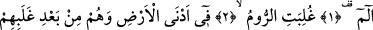
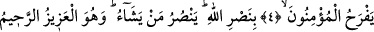
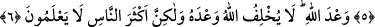
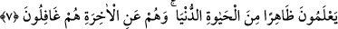

ALLAH VAADİNDEN CAYMAZ
Rahmân ve Rahîm (olan) Allâh’ın adıyla.
1. Elif. Lâm. Mîm.
2-5. Rumlar, (Arapların bulunduğu bölgeye) en yakın bir yerde yenilgiye
uğradılar. Halbuki onlar, bu yenilgilerinden sonra birkaç yıl içinde galip
geleceklerdir. Eninde sonunda emir Allâh’ındır. O gün müminler de Allâh’ın
yardımıyla sevineceklerdir. Allah, dilediğine yardım eder. O, mutlak güç sâhibidir,
çok esirgeyicidir.
6. (Bu) Allâh’ın vâdidir. Allah vâdinden caymaz; fakat insanların çoğu bilmezler.
7. Onlar, dünyâ hayatının görünen yüzünü bilirler. Âhiretten ise, onlar tamamen
gâfildirler.
Elif. Lâm. Mîm.
Ebü’l-Cevzâ İbn Abbâs (r.a.)’tan şöyle rivâyet etmiştir: “Mukattaa harfleri rabbânî
senâlardır. Her harfi, Hakk’ın senâ edildiği bir sıfata işârettir. Bunlardan “Elif”
ulûhiyetten, “Lâm” lütuftan, “Mîm” ise mülkten kinayedir.
Yine denilmiştir ki: “Elif”, “Allah” ismine; “Lâm” Cebrâîl’in lâm’ına, “Mîm” ise
“Muhammed” ismine işârettir. Yâni Allah -celle celâlüh- Cebrail (a.s.) vâsıtasıyla Hz.
Muhammed (s.a.)’e vahiy gönderdi, demektir.
et-Te’vîlâtü’n-Necmiyye’de der ki: “Elif” ile mü’minlerin tabîatının birbirleriyle
ülfetine, “Lâm” ile kâfirlerin tabîatının alçaklığına, “Mim” ile de âlemlerin Rabbi’nin
mağfiretine işâret etmektedir. Hepsiyle ise, Allah mü’minlerin kalblerini birbirine
ısındırdığı için onların ülfeti Allâh’ın kereminden ve fazlından olduğundan dolayı bu
ülfet öyle bir dereceye ulaşmıştır ki mü’minlerle ehl-i kitab arasında da bir tür ülfet
meydana getirmiştir. Çünkü onlar bugün olmasalar bile bir gün gelecek ehl-i îmandan
olacaklardır. Kâfirlerin alçaklığı ise yaratılışlarından geldiğinden onlara hâkim